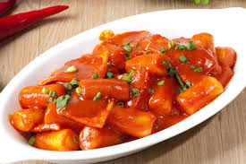
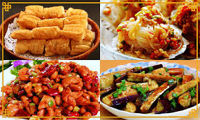

What Jin likes
1.Food
먼저 진영은 먹는 것을 즐기며 사랑한다. 크게 두 가지 분류로 나눠보자면, '매운 음식' '중국 음식'을 꼽을 수 있다. 매운 음식 중에서는 떡볶이를 상당히 좋아하는 편이며, 중국 음식 중에서는 훠궈를 사랑하는 편이다.

진영이 먹는 것을 볼 때 참 행복하다. 사실 난 매운 것을 잘 못먹지만 진영이 매운걸 좋아해서 잘먹는 척 한다. 하지만 항상 실패한다. 사실 향신료 음식도 잘 못먹었는데, 진영과 함께 하면서 꽤나 강해졌다.
2.Movie
진영은 영화를 직업으로 삼을만큼 좋아한다. 장르 중에서는 로맨스/멜로를 주로 보는 편이며, 미국/중국 영화를 선호한다. 아마도 진영은 중국인 혼혈인 듯 싶다.
3.Sleep
진영은 잠자는 것을 참 좋아한다. 사실 자는 거 깨우다가 몇 번 혼났다. 그래서 요즘은 잠자는 거 같으면 조용히 있는다. 하지만 요근래 새벽마다 깨기 때문에 걱정이 된다. 잠에 도움이 되라고 공기청정기(구매는 링크 참조) 작은 것을 최근에 하나 선물 했다. 하지만 별 도움이 되지 않는 듯 싶다. 슬프다.